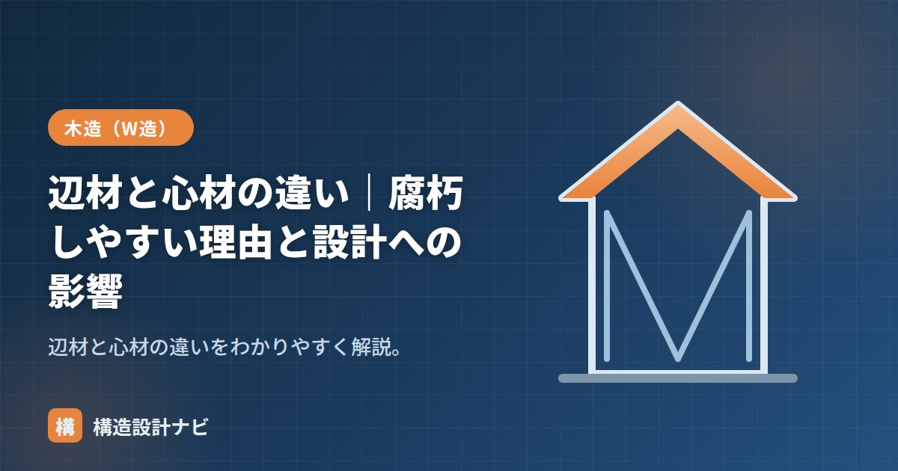

辺材と心材の違い｜腐朽しやすい理由と設計への影響

心材（しんざい）と辺材（へんざい）とは、丸太の断面に現れる2つの部位の名称です。木を輪切りにすると、中心側の色の濃い部分が心材、外周（樹皮側）の色の淡い部分が辺材で、見た目だけでなく耐久性・含水率が大きく異なります。木造の材料選びでは、この違いを理解して部位ごとに使い分けることが、建物の耐久性を左右する重要なポイントになります。
- 心材は丸太の中心側（赤身）、辺材は外周側（白太）の部位。
- 辺材は水分・養分が多く、腐朽菌やシロアリの被害を受けやすい。
- 土台など耐久性が求められる部位には心材を使うのが基本。
心材と辺材の違い
| 心材（赤身） | 辺材（白太） | |
|---|---|---|
| 位置 | 中心部 | 外周（樹皮側） |
| 色 | 濃い（赤み） | 淡い（白っぽい） |
| 耐久性 | 高い（腐りにくい） | 低い（腐りやすい） |
| 含水率 | 低め | 高め |
1本の丸太の中でも、外側から製材した板は辺材を多く含み、中心付近から製材した「心持ち材」は心材の割合が高くなります。同じ樹種・同じ丸太から取った材でも、どの位置から製材したかによって耐久性が変わる点は覚えておきたいところです。
読み方・英語名・見分け方
心材は「しんざい」、辺材は「へんざい」と読みます。心材は色が濃いことから赤身（あかみ）、辺材は色が淡いことから白太（しらた）とも呼ばれます。英語では心材をheartwood（ハートウッド）、辺材をsapwood（サップウッド）といい、直訳すると「樹液を通す木部」という意味で、生きた細胞として水分・養分を運ぶ役割を表しています。木口（切り口）を見れば、中心の濃い部分と外周の淡い部分の境目がはっきり分かるため、現場でも見分けやすい特徴です。
辺材が腐朽しやすい理由
辺材は、生きている時に水分や養分（でんぷん等）を多く含む部分です。そのため菌や虫のエサ・水分が豊富で、腐朽・虫害を受けやすくなります。一方、心材は樹木が成長する過程で樹脂や抽出成分（心材成分）を蓄積し、これらが抗菌・防虫の働きをするため、辺材に比べて腐りにくくなります。
木造設計への影響
- 土台・水回り：腐朽・シロアリに強い心材（ヒノキ・ヒバの赤身）を使うのが基本（→土台）。
- 辺材を使う場合は防腐・防蟻処理を行う。
- 耐久性が求められる部位ほど心材を選ぶ。
- 構造計算で使う木材の許容応力度は樹種・等級で決まり、心材・辺材の区別で直接変わるものではないが、実際の耐久性は施工現場での使い分けが重要になる。
- 製材時に背割りを入れる心持ち材は、心材の割合が高く土台に適した材が取りやすい。
よくある間違い・注意点
「心材＝強い」「辺材＝弱い」と誤解されがちですが、これは強度ではなく耐久性（腐朽・虫害への抵抗）の違いです。強度そのものは樹種・等級によって決まるため、辺材だから曲げ強度が低いというわけではありません。用途に応じて「強度」と「耐久性」を分けて考えることが大切です。
土台の木材検査では、背割りの入った心持ち材が実際に赤身主体になっているかを木口で確認するようにしている。製材所によっては辺材混じりの材が紛れることもあり、書類上の樹種・等級だけでなく現物のチェックが欠かせない。
丸太の断面と製材（図解）
1本の丸太のどこから木取りするかで、心材・辺材の割合が変わります。
辺材が腐朽しやすい理由
同じ木から取れた材なのに耐久性が違うのは、樹木の中での役割が異なるためです。
| 項目 | 心材 | 辺材 |
|---|---|---|
| 樹木内での役割 | 役目を終えた古い細胞。樹体を支える | 生きた細胞。水分・養分を運ぶ |
| 含水率 | 低い | 高い（生木では200%を超えることも） |
| 栄養分（でんぷん・糖） | ほとんどない | 多く含む |
| 抽出成分 | あり（腐朽菌・虫を寄せつけない成分が沈着） | ほとんどない |
| 結果 | 腐りにくい・虫害に強い | 腐りやすい・虫害を受けやすい |
決定的な違いは抽出成分です。樹木が成長する過程で、中心部の細胞は役目を終え、そこにフェノール類などの成分が沈着していきます。これが天然の防腐・防虫剤として働き、心材に耐久性を与えます。ヒノキの独特の香りも、この抽出成分によるものです。一方、辺材は生きた細胞として栄養分（でんぷん・糖）を含むため、腐朽菌やシロアリにとっては格好の餌になってしまいます。
「心材は硬くて辺材は柔らかい」と思われがちですが、強度そのものには大きな差がないのが実際です。構造計算で用いる木材の許容応力度は樹種と等級で決まり、心材か辺材かでは変わりません。両者の違いは主に耐久性（腐りにくさ・虫害への強さ）にあります。したがって、土台や水回りなど劣化しやすい部位では心材を、そうでない部位では辺材を使い、必要に応じて防腐・防蟻処理を施す、という使い分けが合理的です。
よくある質問
Q1. 心材と辺材はどうやって見分けますか？
木口（切り口）を見れば、色の違いではっきり判別できます。中心側の色が濃い部分が心材、外周側の淡い部分が辺材です。ヒノキやスギでは特に境目が明瞭で、心材は赤みを帯び、辺材は白っぽい色をしています。製材された板でも、木口面や木裏を見れば区別できます。なお、樹種によっては色の差が小さく判別しにくいものもあります。
Q2. 辺材は使ってはいけないのですか？
使えます。強度は心材と大きく変わらないため、腐朽や虫害のリスクが低い部位であれば問題なく使用できます。実際、建物の中で使われる木材の多くは辺材を含んでいます。ただし、土台や外部に接する部位、水回りなど湿気を受けやすい箇所では、心材を選ぶか、辺材に防腐・防蟻処理を施すことが必要です。
Q3. 集成材やCLTでは心材・辺材の区別は関係ありますか？
製造上は選別されますが、使用者が意識する場面は限られます。集成材は小さな板（ラミナ）を接着して作るため、心材・辺材が混在するのが普通です。耐久性が求められる用途では、防腐処理を施したラミナを使う、あるいは薬剤を加圧注入した集成材を用いるといった対応がとられます。無垢材のように「心材だから安心」という選び方ではなく、製品としての性能表示（保存処理の等級など）で判断します。
まとめ
- 心材は中心の赤身で耐久性が高く、辺材は外周の白太で腐りやすい。
- 英語では心材heartwood、辺材sapwoodと呼ばれる。
- 辺材は水分・養分が多く、菌・虫の害を受けやすい。
- 土台・水回りは心材を使い、辺材は防腐・防蟻処理する。